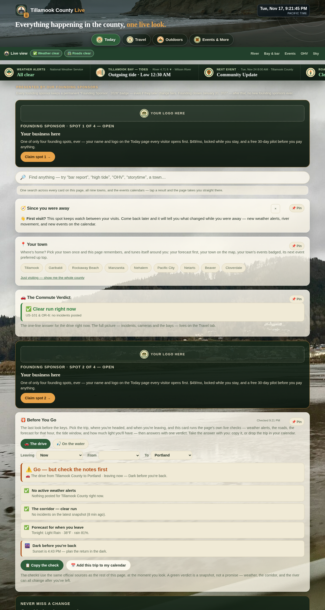

Founding Sponsor · Spot 1 of 4
Sunset to Sunset Vacation Rentals
Local vacation rental manager looking after many homes around Manzanita.
Visit Sunset to Sunset →Presented by our Founding Sponsors
Every founding sponsor keeps a permanent Founding Sponsor 2026 badge, even if they later change tiers. Founding closes January 31, 2027. After that, no new founding sponsors ever.
Founding Sponsor · Spot 1 of 4
Local vacation rental manager looking after many homes around Manzanita.
Visit Sunset to Sunset →Founding Sponsor · Spot 2 of 4 · Open
One of only four founding spots, ever. Your name and logo on the Today page every visitor opens first. $49/mo, locked while you stay, and a free 30-day pilot before you pay anything.
See the live site →Founding Sponsor · Spot 3 of 4 · Open
One of only four founding spots, ever. Your name and logo on the Today page every visitor opens first. $49/mo, locked while you stay, and a free 30-day pilot before you pay anything.
See the live site →Founding Sponsor · Spot 4 of 4 · Open
One of only four founding spots, ever. Your name and logo on the Today page every visitor opens first. $49/mo, locked while you stay, and a free 30-day pilot before you pay anything.
See the live site →Tillamook County Live pulls the things people here check every day into one free page that works on any phone:
